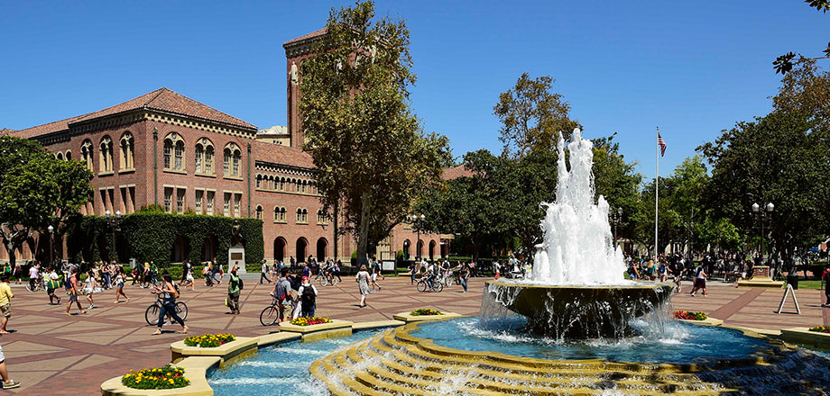
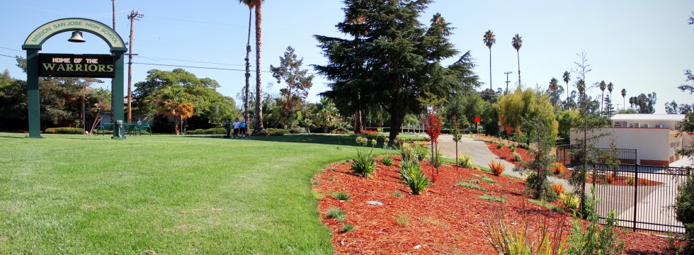

Hello there! My name is Nishir Shelat, and I love to design, code, and build things using tools such as C++ and my Arduino to create innovative solutions for contemporary problems. I am always looking for new things to learn and fresh challenges to take on. Let me know how I can help you with your next project by contacting me! I look forward to talking with you about my past projects and discussing all of the ways I can contribute to your next project!
University of Southern California

I am currently a freshman studying Computer Engineering and Computer Science at USC. This semester, I am taking Introduction to C++, Introduction to Embedded Systems, and Multivariable Calculus. I am also a part of several CS organizations, such as the Association for Computing Machinery, Makers, Corpus Callosum, and Queers in Engineering, Science, and Technology.
Mission San Jose High School

I graduated with a GPA of 3.96 from MSJ, where I took two years of physics (Ap Physics 1 and AP Physics C) as well as a semester each of C++ and Discrete Mathematics. I played the French Horn in the Warrior Marching Band and served as Section Leader during my senior year. I was also Activities Coordinator for the beatboxing club and Head of Public Relations for the Teach the Future Foundation.